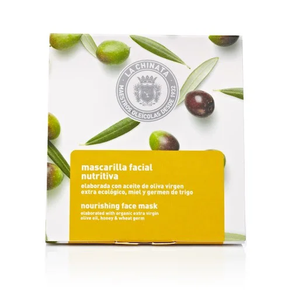

Cosmetic Made in Spain
聯繫我們
產品展示
LA CHINATA NOURISHING FACE MASK

33 Kr Content: 5 x 8 ml
La Chinata Nourishing Face Mask is elaborated with a base on salt and trace elements-rich muds that leaves your skin soft and hydrated. Besides, it is formulated with actives that nurture and regenerate our skin and that increase the elasticity preventing wrinkles. On one side, it is elaborated with EVOO that acts as a natural hydrant with antioxidant and antiaging effects and with muds that enhance cell oxygenation, that refresh and reaffirm skin. On the same way, sweet almonds oil repairs the barrier function of the skin, along with the wheat germ oil that stimulates microcirculation. Masks intensify a specific action and have an immediate effect. That is why is important to choose the most suitable mask to each skin need, as they adjust to specific demands. The type of mask we need might depend on climate, routines, sun exposure… Thus, we have a wide range of mask to choose from: Lifting effect, revitalizing, purifying, hydrant and nourishing. To apply properly, a thin layer should be spread out on the face and leave it from 10 to 15 minutes. After that, rinse with warm water and remove all the mask from the face. It is recommended to be applied once per week. For the full experience, after the mask, it is recommended to apply Antiox Regenerating Facial Serum , and finally, La Chinata Moisturizing Cream.
Vida Copyright © 2024 All rights reserved